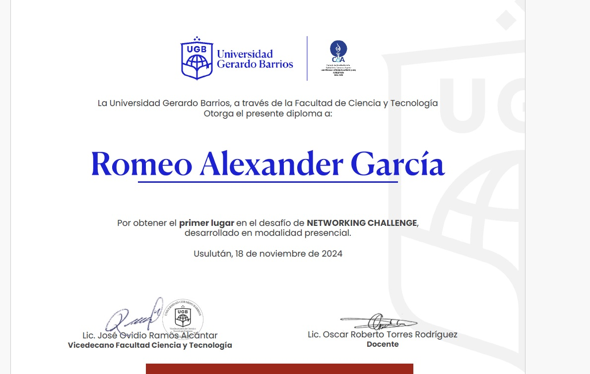

Networking Challenge

Hola soy
Estudiente de ingeniería en sistemas y redes informáticas enfocado en pentesting controlado. Experiencia con Nmap, Wireshark, Metasploit, Aircrack-ng.

Analista en Formación | Ciberseguridad, Redes y Sistemas.
Soy un estudiante y futuro analista de ciberseguridad con un enfoque disciplinado, metódico y profundamente orientado al análisis técnico. Mi forma de trabajo se basa en comprender a fondo cómo funcionan los sistemas, detectar fallos, corregirlos y documentar cada proceso con precisión profesional. No busco “solo que funcione”; busco entender el por qué y el cómo de cada configuración, regla, servicio o comportamiento dentro de la red. Cuando trabajo el lado ofensivo, aplico metodología, control y documentación, enfocándome en entender cómo un atacante piensa para fortalecer mejor los sistemas. Esta combinación me permite ver la ciberseguridad desde ambos enfoques y construir soluciones más completas y efectivas.


Trabajo la ciberseguridad desde la práctica en laboratorio: montando entornos virtuales, simulando ataques controlados y reforzando la infraestructura con buenas prácticas de redes y sistemas. Mi enfoque es técnico, documentado y paso a paso.
Email: alexcastillo7g@gmail.com
LinkedIn: linkedin.com/in/romeogarcia
GitHub: github.com/romeogarcia